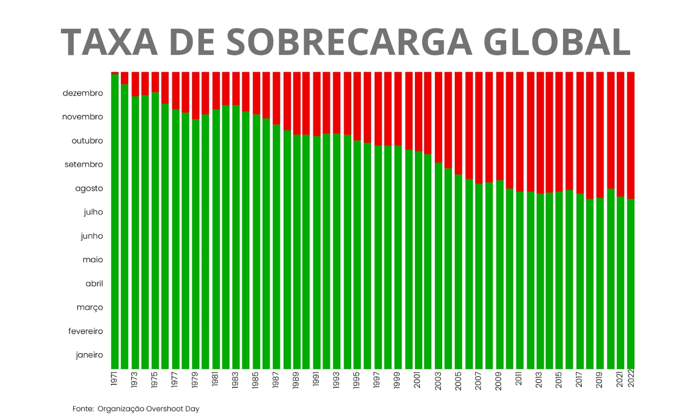

Abaixo estão os dados consolidados sobre a taxa de sobrecarga global de resíduos causados pelo Fast Fashion.

O gráfico demonstra que, desde 1971, a humanidade tem consumido recursos naturais mais rapidamente do que a Terra consegue regenerá-los, adiantando a data da sobrecarga.
A taxa de sobrecarga global de resíduos causados pelo fast fashion é alarmante: cerca de 92 milhões a 100 milhões
de toneladas de roupas são descartadas anualmente.
O fast fashion incentiva a compra constante de roupas baratas e tendências passageiras, mas gera sérios impactos ambientais.
Segundo a ABREMA, de 1% dos resíduos têxteis são reciclados para criar novas roupas, e 80% e 87%
dos tecidos descartados acabam em aterros, são incinerados ou vão para lixões a céu aberto. Os dados mostram a necessidade
de um consumo mais consciente e de práticas mais sustentáveis na indústria da moda.
O fast fashion incentiva a compra constante de roupas baratas e tendências passageiras, mas gera sérios impactos ambientais. Segundo a ABREMA, de 1% dos resíduos têxteis são reciclados para criar novas roupas, e 80% e 87% dos tecidos descartados acabam em aterros, são incinerados ou vão para lixões a céu aberto. Os dados mostram a necessidade de um consumo mais consciente e de práticas mais sustentáveis na indústria da moda.